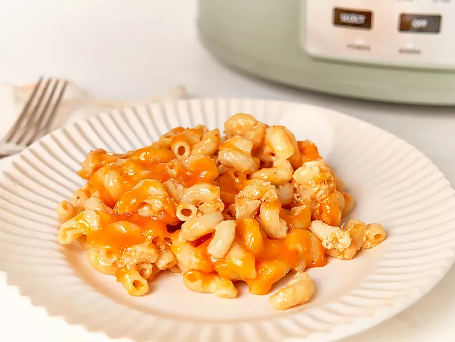

Mac and Cheese

This supremely creamy crockpot macaroni and cheese is the way to go when you'd rather not have the oven on. It's as rich as baked macaroni and cheese, without the heat.
Ingredients
- 1 pound uncooked elbow macaroni
- 2 tablespoons kosher salt, divided
- cooking spray
- 1 1/2 cups whole milk
- 1 (12 ounce) can evaporated milk
- 1 large egg
- 1 large egg yolk
- 1/2 cup butter, cut into pieces
- 3 ounces cream cheese, cut into pieces
- 1/4 teaspoon black pepper
- 16 ounces sharp Cheddar cheese, shredded, divided
Directions
- Bring a large pot of water to a boil over high heat; add macaroni and 4 1/2 teaspoons salt. Cook pasta until just barely tender, about 5 minutes. Drain and rinse with cold water to stop the cooking process.
- Spray the inside of a slow cooker with cooking spray. Add pasta to the slow cooker and stir in milk, evaporated milk, butter, cream cheese and pepper. Whisk together egg and egg yolk in a small bowl until well combined; stir into pasta mixture. Set aside 3/4 cup shredded cheese. Stir remaining cheese into pasta mixture, cover, and cook on Low until bubbly and lightly browned around the edges, about 1 1/2 hours.
- Sprinkle with reserved cheese, cover, and cook until cheese is melted, about 15 minutes more. Serve immediately. Alternatively, turn crockpot to Warm or Off until ready to serve